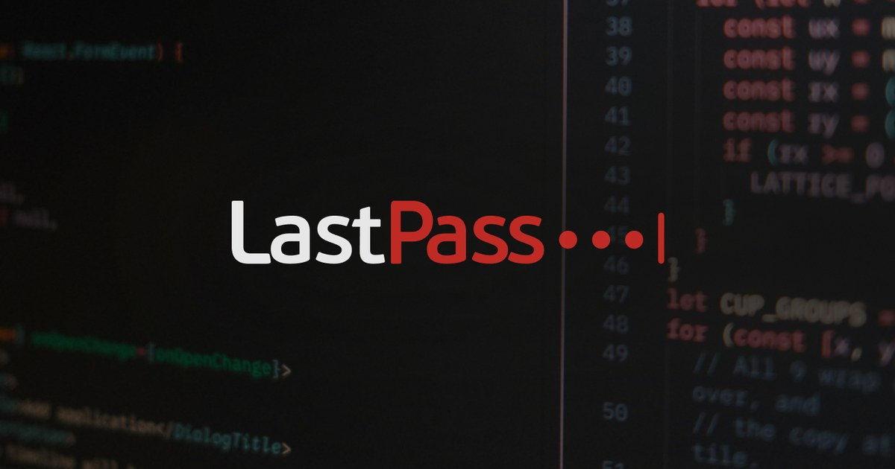
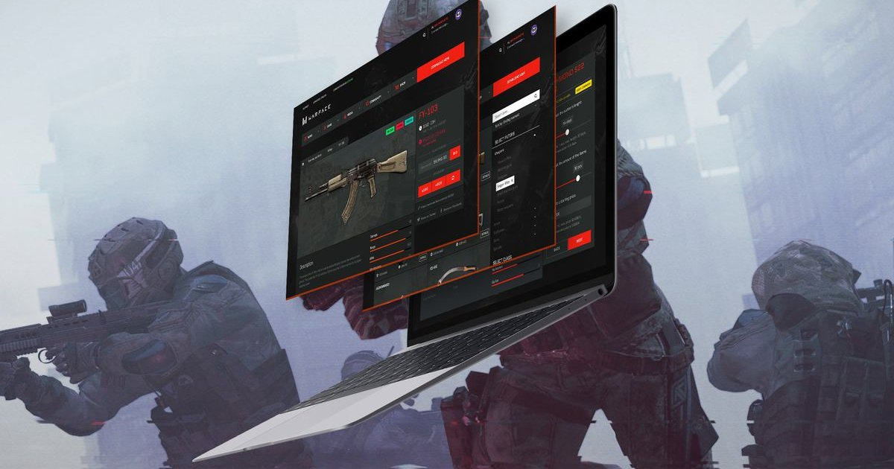
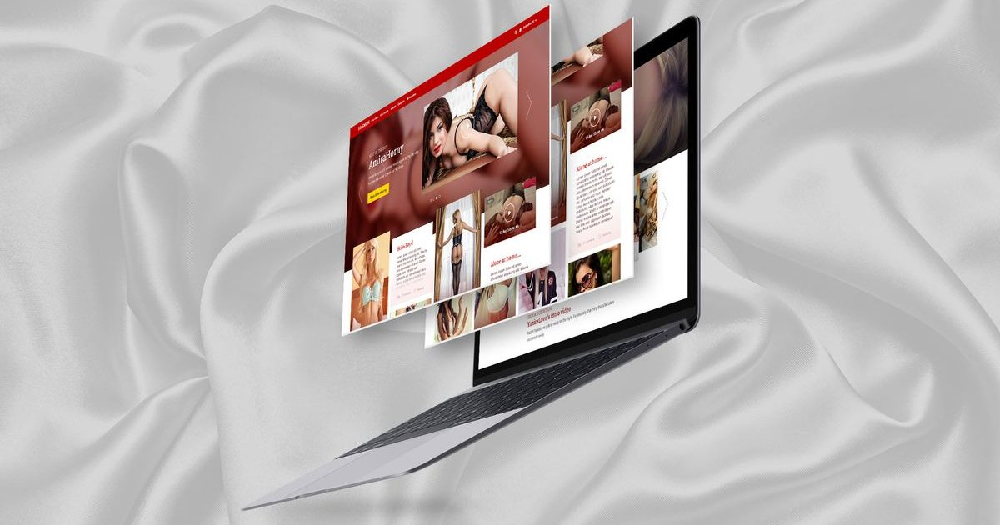

Hello there!
I'm Krisztián, a Multidisciplinary Designer and Design Engineer who has been crafting the world wide web for more than two decades.
I design and build digital products end to end: research and flows, interfaces and design systems — then the HTML, CSS, and JavaScript that actually ships them. I don't believe in the wall between design and code. Most of my best work happened in the browser, live coding, where an idea can be clicked five minutes after it was said out loud.
I've worked with Microsoft, LogMeIn, LastPass, and Crytek, just to name a few. These days, I build my own open-source apps — mostly because I wanted some simple tools to exist, but also because I'm having fun learning agentic development along the way.
Currently open to remote Senior Product Design and Design Engineer roles — especially in SaaS, open source, or privacy-focused teams.
Case studies

LastPass × a11y Overhaul
Complete accessibility refactor of the web app and browser extension, 14% increase in compliance.
read more →
Warface Auction House
Player-to-player auction house for Crytek's FPS, from item browsing to bidding flow.
read more →
Glamorous Camsite
Designing the standalone glamorous version of the most popular camsite.
read more →Personal projects
Interested in working together?
Drop a line to the hey@krisztian.wtf inbox and let's have a chat.
If you are into HR stuff, you can read my curriculum vitae (oh là là), or you can check me on LinkedIn